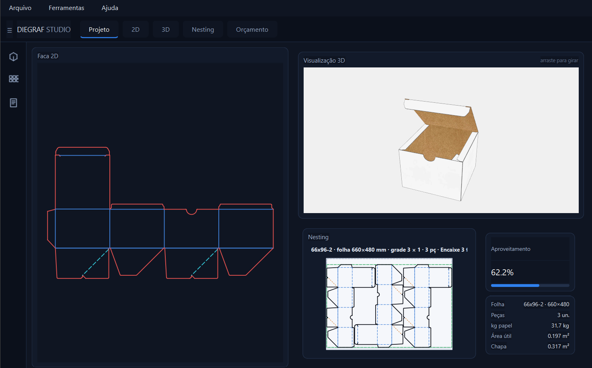

Desenhe a faca, veja a caixa em 3D, calcule o aproveitamento da folha e gere o orçamento para o cliente.
Versão Lite sem mensalidade: pague uma vez e use para sempre.

Feito por quem vive de pré-impressão. Menos planilha, menos conta de cabeça.
Modelos prontos ou a faca do cliente em PDF, com a caixa montada na tela.
Compara formatos de folha e mostra o que gasta menos papel.
PDF técnico e Excel prontos para enviar, salvos por cliente e versão.
Quatro passos, na ordem em que você trabalha hoje.
Escolha um modelo de faca e digite as medidas da embalagem pronta, ou importe a faca que o cliente mandou em PDF.
A caixa aparece montada na tela. Gire, veja cada face e confirme a estrutura antes de ir para a produção.
Informe material, quantidade e gramatura. O programa compara os formatos de folha e destaca o que gasta menos papel.
Com um clique saem o PDF técnico e o Excel, organizados por cliente e versão, prontos para enviar.
Feito principalmente para gráficas, e também para estúdios de pré-impressão e vendedores de embalagem, que precisam responder orçamento rápido, com faca, 3D e consumo de papel no mesmo lugar. O programa traz duas interfaces, Clássica e Avançada, e você escolhe qual usar na primeira execução.
Acesso completo, sem cadastro. Na primeira execução você escolhe a interface: Clássica ou Avançada.
Depois dos 15 dias, veja como adquirir a licença.
Use grátis por 15 dias. Gostou? Escolha a versão e continue de onde parou.
Muitos programas da área cobram mensalidade. A licença Lite é permanente: sem vencimento e sem pagar todo mês. Quer os recursos avançados? Some o PRO, com renovação anual opcional.
Um único instalador. A chave define a versão.
| Recurso | LITE | PRO |
|---|---|---|
| Facas paramétricas 2D (vários modelos) | ||
| Vazadores, cotas e espessura do substrato | ||
| Mockup 3D com montagem vinco a vinco | ||
| Importar faca de PDF do cliente | ||
| Aproveitamento de folha (uma faca) | ||
| Orçamento com protocolo e até 3 tiragens | ||
| Faca em PDF 1:1 e SVG, com cor especial | ||
| Interfaces Clássica e Avançada | ||
| Onde ficam os recursos PRO | visíveis e desativados na Avançada | Interface Avançada |
| Videoaulas e tutoriais no programa | ||
| Aproveitamento em lote: facas de vários clientes na mesma folha | — | |
| Montagem para gravação de chapa (arte, marcas, barra de cores) | — | |
| Arte da embalagem aplicada no 3D | — | |
| PDF 1:1 da folha montada | — | |
| Validade | Para sempre | 1 ano · renovável vencido, segue como Lite |
| Preço | R$ 1.200 pagamento único | R$ 1.000/ano R$ 800 no combo e na renovação antecipada |
Os recursos PRO ficam na interface Avançada. No Lite eles aparecem marcados e desativados, então você vê o que ganha antes de contratar.
O PRO não prende você: se não renovar, o programa continua funcionando como Lite, com tudo o que você já fez.
Do teste à licença ativa em quatro passos.
Baixe, instale e use por 15 dias.
No programa, abra Ajuda → Ativar programa / Licença. Ele mostra o código do seu computador, com botão Copiar.
Envie o código da máquina, combine a forma de pagamento e confirme a compra.
Depois da confirmação você recebe a chave, ou um arquivo .lic, e cola na mesma janela.
Chame no WhatsApp. Você informa o código da máquina, combina a forma de pagamento com a gente e recebe a chave para ativar.
Diga se quer o Lite, o PRO ou o combo Lite + PRO. Para várias máquinas, peça as condições.
Não achou o que procura? Chame no WhatsApp.
Todos os recursos ficam liberados por 15 dias. A contagem começa na primeira vez que você abre o programa, e não no dia da instalação.
Não. O teste roda no seu computador, sem cadastro e sem cartão.
O programa continua abrindo, mas com os recursos desligados e um aviso com o botão para ativar, até você inserir a chave de uma licença.
Lite: R$ 1.200, pagamento único. PRO: R$ 1.000 por ano, para quem já tem o Lite. Combo Lite + PRO na primeira compra: R$ 2.000 (o 1º ano do PRO sai por R$ 800). Renovando o PRO antes de vencer, R$ 800 por ano. Para mais de uma licença, fale com a gente e confira as condições.
Não. O Lite é pago uma vez e é seu para sempre. O PRO é anual e opcional: só renova quem quiser continuar com os recursos avançados.
O programa continua funcionando como Lite, com seus projetos e configurações. Os recursos PRO ficam marcados e voltam assim que você renovar.
Chame no WhatsApp e envie o código da máquina. Depois de combinar o pagamento, você recebe a chave, como texto ou como arquivo .lic, e ativa em Ajuda → Ativar programa / Licença.
No programa, em Ajuda → Ativar programa / Licença. O código aparece em um campo, com um botão Copiar.
Não. Cada chave é gerada para o código de um computador específico e só funciona nele. Para outro computador, peça outra chave.
As duas fazem o mesmo trabalho e vêm no mesmo programa. A Clássica é mais simples e leve, e a Avançada é mais moderna, com tutoriais integrados. Você escolhe na primeira execução e pode trocar em Ferramentas → Versão.
Sim. Em Arquivo → Importar faca de PDF você importa o desenho, confere e usa no lugar de um modelo do programa.
Faca em PDF e SVG, e o pacote do orçamento com PDF técnico e Excel, salvos por cliente e versão.
Windows 10 ou superior, 4 GB de memória (8 GB recomendado), 500 MB livres em disco e tela de 1024x768 ou maior.
Pelo WhatsApp ou pelo Instagram @gois_lab.